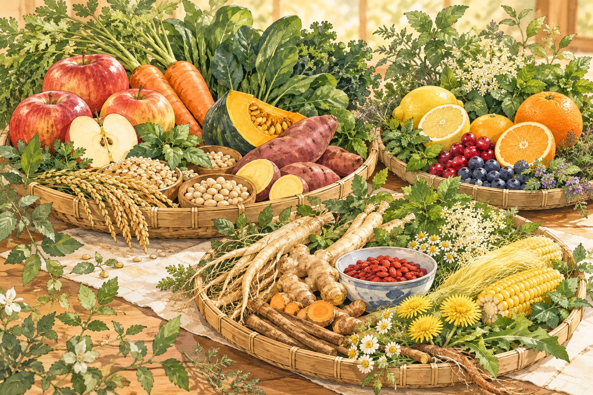
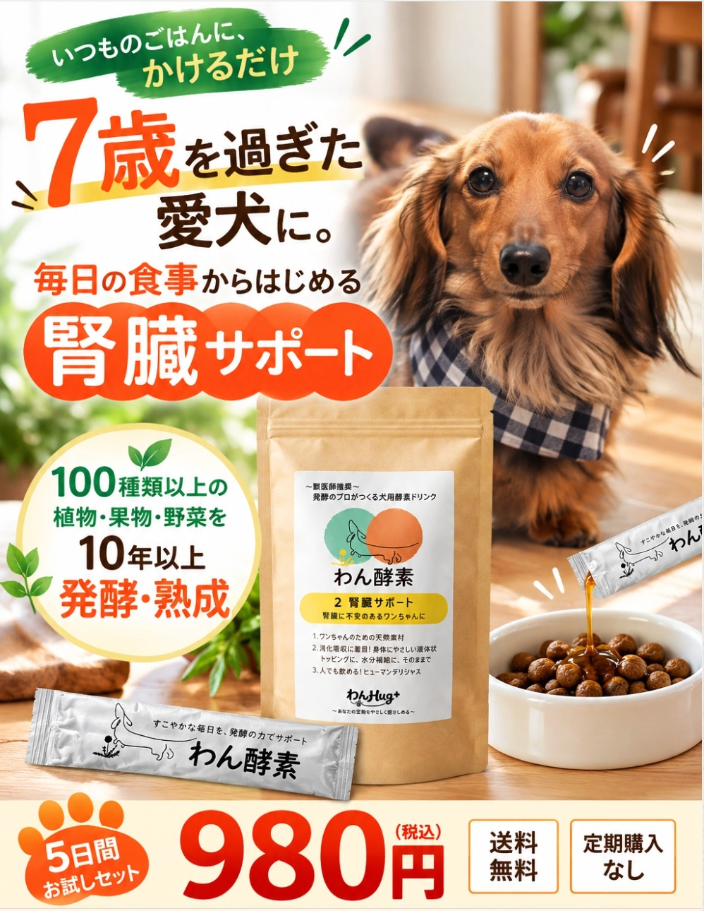

おなかの健康との
関わりにも、注目。
研究で報告されていること
一部の酵母発酵素材で、
腸内細菌の変化などが
報告されています。
※効果を保証するものではありません。
出典：Lin et al.（2019）を読む ↗その日から、少しだけ
この子の見え方が変わった。
そして、翌朝。


気になる段階をタップ
素材には、
さまざまな成分が
含まれています。
小さな微生物が、素材に働きかけます。
微生物が成分の
一部を使い、
別の成分をつくります。
発酵前とは、
含まれる成分の
組み合わせが変わります。
一般的な発酵のイメージ

一部の酵母発酵素材で、
腸内細菌の変化などが
報告されています。
※効果を保証するものではありません。
出典：Lin et al.（2019）を読む ↗


人の手をかけて育てます。


100種類以上の素材を
発酵させたベース
とうもろこしのひげ
たんぽぽ・クコ
発酵素材の研究を、
もう少し詳しく知りたい方へ。

腸内細菌との関わり
免疫反応との関わり
抗酸化の働きとの
関わり
各イラストは研究テーマのイメージです。
※一部の発酵素材に関する研究の紹介です。
効果を保証するものではありません。


この子との毎日を、
これからも大切に。毎日のごはんに、
発酵という選択を。

登場人物と場面はフィクションです。